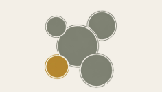

Beers of every color and character,
each one distinctly its own.
Taste today's glass, and with every sip
you're filled up a little more —
and, without exception, in good spirits.
When people like that happen to be in the same room,
small encounters start bubbling up.
Delicious brings joy.
Joy creates connection.
Craft beer always carries a spark.
I just wanted to stand on my own two feet, fast. I was always better at finding what felt right to me than following the rules — finding a little workaround with a mischievous grin. That's how I learned that you build your own path yourself.
I moved through fast-paced global companies, day after day at a dead sprint. Running as hard as I could — and when I finally looked back, what stayed with me wasn't the results. It was the small connections with the people I met along the way.
At some point, my shoulders just relaxed. "It'll work out — let's just try it." "Being different isn't so bad." Once I could think that, breathing suddenly got easier. Mindful Brewing was there at the start of a life filled with nothing but what I love.
Land, ingredients, time —
individuality is born
where different elements meet.
When differences meet each other,
that's where new discoveries and new experiences are born.
It's the same for a glass of beer as it is for a person.
That's why this place wants to be a small third place where different personalities gather and blend.
Add us on LINE or follow us on Instagram and we'll send you the opening news first.
A small encounter might just start right here.
Adding us or following us lets us share opening news and other updates with you.